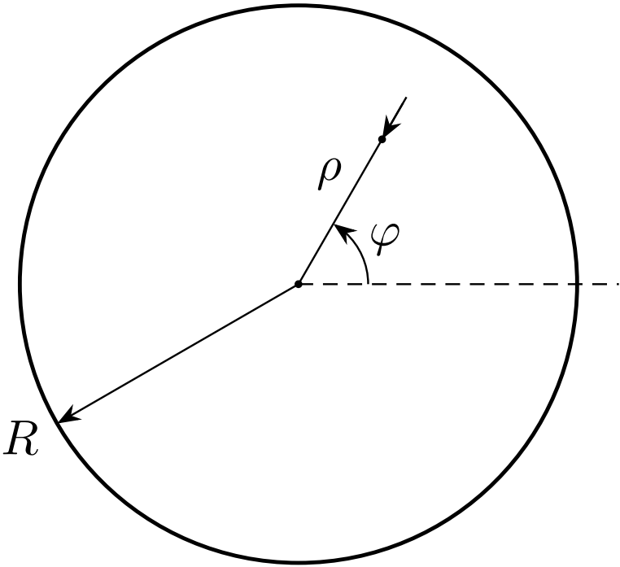
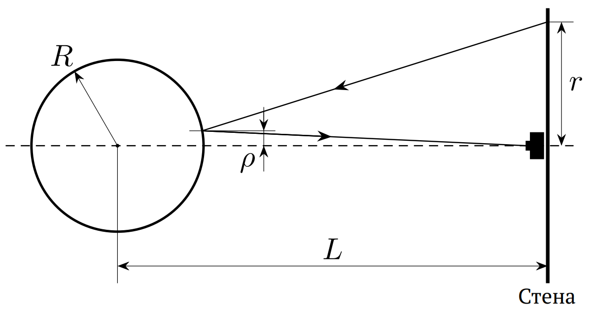
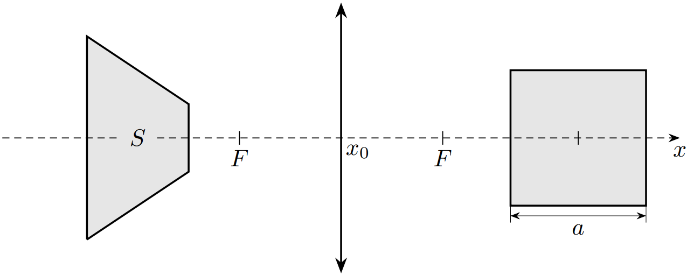

W25 (2025) — English translation
As you know, reflections of everyday objects in mirrors and their images in lenses can take on rather bizarre shapes. But even in these cases, it is possible to restore the shape of the original object. This is what this task will focus on.
Sometimes in photographs of soap bubbles you can see distorted images of objects behind the camera. The first part of the problem is devoted to the study of such distortions. A bubble of radius $R$ is photographed from a distance $L\gg R$ and reflects an irregularly shaped object drawn on a vertical wall. The line connecting the bubble and the camera is perpendicular to the wall; The camera is placed close to the wall. A point on the wall at a distance of $r$ from the camera is visible in the photograph at a distance of $\rho$ from the center of the bubble image.
A bubble of radius $R$ is photographed from a distance $L\gg R$ and reflects an irregularly shaped object drawn on a vertical wall. The line connecting the bubble and the camera is perpendicular to the wall; The camera is placed close to the wall.
A point on the wall at a distance of $r$ from the camera is visible in the photograph at a distance of $\rho$ from the center of the bubble image.


Note: It is convenient to represent the answer as the area under some graph. Graph paper for graphing is provided in the answer sheet.
A square with side $a$ is placed on the axis of a collecting lens with focal length $F$. Two sides of the square are parallel to the optical axis, the other two are perpendicular. The position of the center of the square is given by the coordinate $x$ along the optical axis, the center of the lens is at point $x_0$. The image of a square is a trapezoid, the dependence of its area $S(x)$ is studied in this part of the problem. Note: When solving this problem, you can use the thin lens formula, according to which the distance $u$ from the lens to the light source, the distance $v$ from the lens to the image and the focal length of the lens $F$ are related to each other by the ratio: \[\frac{1}{u}+\frac{1}{v}=\frac{1}{F}.\]Also, when solving, consider it known that the image of a segment in a lens is also a segment if it does not intersect the focal plane.
Note: When solving this problem, you can use the thin lens formula, according to which the distance $u$ from the lens to the light source, the distance $v$ from the lens to the image and the focal length of the lens $F$ are related to each other by the ratio: \[\frac{1}{u}+\frac{1}{v}=\frac{1}{F}.\]Also, when solving, consider it known that the image of a segment in a lens is also a segment if it does not intersect the focal plane.

The answer sheet shows the dependence $S(x)$, and at point $x=16~cm$ the image area becomes immeasurably large. It is much more convenient to analyze this dependence if there is no divergence in it (that is, it always takes finite values).
For further processing, it is convenient to restore the value of $f(x)S(x)$ at point $x=16~cm$. This can be done by extrapolating (extending) the $f(x)S(x)$ relationship.
Note: Please note that the relationship may not be linear around this point
Each point of the obtained dependence allows us to find $a$, $F$ and the coordinate $x_0$ of the lens center.
Source: https://pho.rs/p/3962